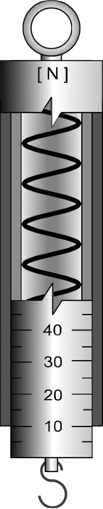
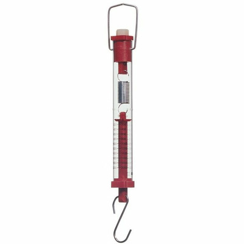

Lecția 11 – Măsurarea forțelor. Dinamometrul
În această lecție înveți cum se măsoară forța cu ajutorul dinamometrului.
Ce indică dinamometrul?
Dacă suspendăm un corp de cârligul dinamometrului, resortul se alungește. Cu cât forța exercitată asupra resortului este mai mare, cu atât deformarea este mai mare.
Dinamometrul indică forța elastică apărută în resortul deformat. În echilibru, aceasta are aceeași valoare cu forța deformatoare.
Dinamometre
Dinamometrele pot avea forme diferite, dar funcționează pe aceeași idee: o forță produce o deformare măsurabilă.


Ce este dinamometrul?
Dinamometrul este instrumentul folosit pentru măsurarea forțelor. El conține, de obicei, un resort elastic, un cârlig, un indicator și o scară gradată.
Funcționarea lui se bazează pe deformarea elastică a resortului.
Relația arată că forța elastică \(F_e\) este proporțională cu alungirea \(\Delta l\), atâta timp cât resortul nu este deformat peste limita elastică.
Cum se etalonează?
- Se suspendă resortul pe un suport.
- Se fixează un indicator lângă o scară gradată.
- Se agață corpuri de mase cunoscute.
- Se marchează pozițiile indicatorului pentru forțe cunoscute.
- Se împarte scara în intervale egale, dacă deformarea este proporțională cu forța.
Cum folosim dinamometrul?
- Alegem un dinamometru potrivit pentru forța de măsurat.
- Verificăm dacă indicatorul pornește de la zero.
- Nu depășim valoarea maximă înscrisă pe scară.
- Citim indicația privind perpendicular pe scară.
- Notăm valoarea numerică și unitatea de măsură.
Scări de măsură
Forța se măsoară în newtoni, notați \(N\). Pentru forțe mici sau mari se pot folosi submultipli și multipli.
| Simbol | Valoare | Utilizare |
|---|---|---|
| \(mN\) | \(1\,mN=0{,}001\,N\) | forțe foarte mici |
| \(N\) | unitatea SI | măsurări obișnuite |
| \(kN\) | \(1\,kN=1000\,N\) | forțe mari |
Ce forță indică dinamometrul?
Un corp are masa \(m=0{,}5\,kg\) și este suspendat de un dinamometru. Considerăm \(g \approx 10\,\frac{N}{kg}\).
Indicația dinamometrului este greutatea corpului:
Întrebarea 1
Dinamometrul este folosit pentru măsurarea:
Întrebarea 2
Funcționarea dinamometrului cu resort se bazează pe:
Întrebarea 3
Un corp de \(0{,}3\,kg\) este suspendat de dinamometru. Pentru \(g \approx 10\,\frac{N}{kg}\), indicația este: